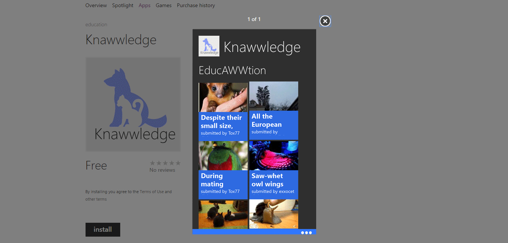
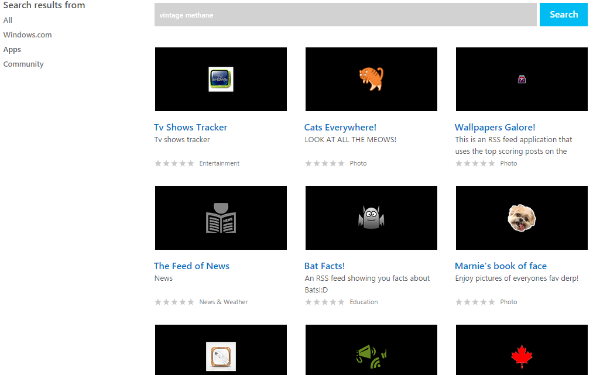
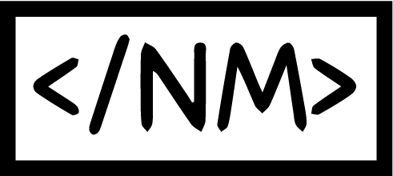
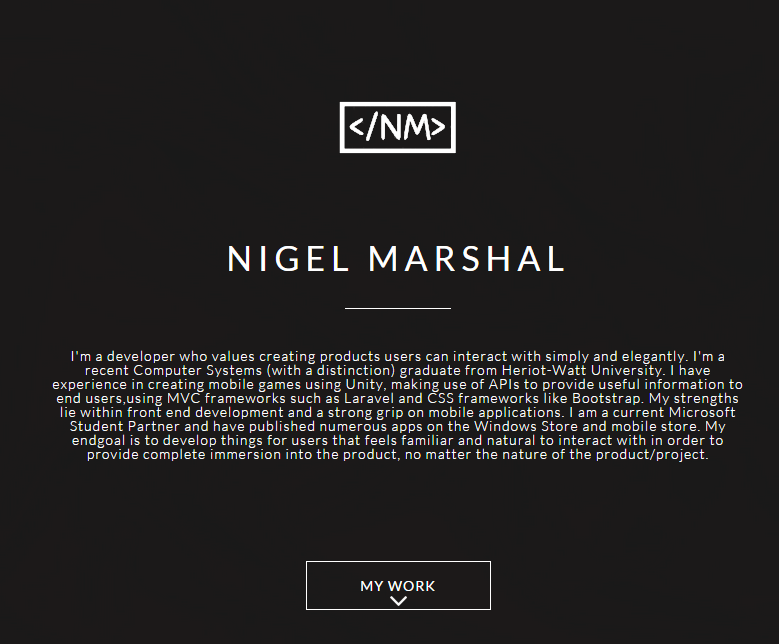

I'm a developer who values creating products users can interact with simply and elegantly. I'm a fresh Computer Systems graduate (with a distinction) from Heriot-Watt University. I have experience in creating mobile games using Unity, making use of APIs to provide useful information to end users, using MVC frameworks such as Laravel and CSS frameworks like Bootstrap. My strengths lie within front end development and I have a strong grip on mobile applications. I am a current Microsoft Student Partner and have published numerous apps on the Windows Store and mobile store. My end goal is to develop products for users that feels natural to interact with in order to provide complete immersion into the product, no matter the nature of the product/project.
Heriot-Watt University
3 Years Course
Microsoft
•Integrated multiple APIs, especially social ones such as Facebook, Twitter, YouTube and Instagram.
•Completed three courses on Microsoft Virtual Academy and was ranked in the Top 10 of the UAE monthly scoreboards.
Marshal & Associates Co.
•Optimized and repaired company laptops and PCs.
•Directly handled and communicated with various clients.
•Created and implemented procedures that led to overall efficiency in the marketing department
Heriot-Watt University
•Participated in the development, organization and successful execution of teaching young adults from 3 different schools.
MBR
Microsoft

Knawwledge
Bubble e-commerce site
STOCKBAE: Financial Advisor Web Application

Windows Applications (Hackathon)
My Twitter Followers

Logo

Initial portfolio design